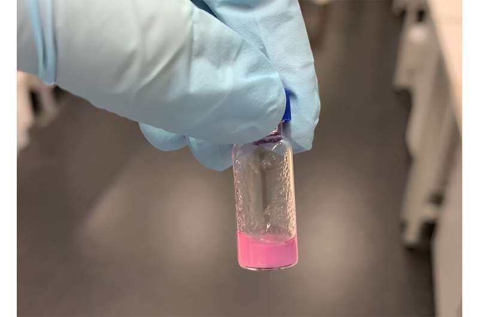

SCP-002
Object Class: Euclid. Tumorous fleshy growth resembling a small apartment inside.

Select a classified containment record below to review Special Containment Procedures, anomalies, and logs.
Object Class: Euclid. Tumorous fleshy growth resembling a small apartment inside.
Object Class: Euclid. Biological motherboard component and ancient stone tablet.
Object Class: Euclid. Old wooden barn door and twelve spatiotemporal keys.

Object Class: Safe. Ornate skeleton key capable of opening virtually any lock.

Object Class: Safe. Natural spring emitting liquid capable of cellular restoration.
